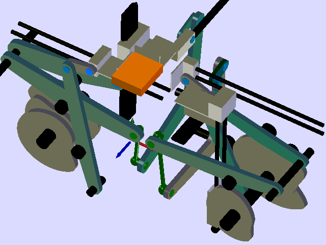

W7-W9 <<
Previous Next >> W7
HW2
前言:
在這個作業中, 我們將針對 SolidWorks, Inventor 與 NX 所建立的零組件檔案加以延伸, 進入電腦輔助設計實習課程的第二個主題: 零件修改.
假如機械設計工程師能夠利用程式方法操控所設計的零組件, 除了可以省下許多手動修改零組件尺寸與配置的時間外, 還可在後續透過其他設計分析方法後, 由各 MCAD 套件的 API 程式介面, 自動建立所需的零組件檔案連結, BOM 表並展示各零件的物理資料.
1980 年代興起的 Matlab, 自 2000 之後部分 Matlab 運算已經逐步被 Python 與 C 的結合所取代, 而自 2012 年起 Julia 出現後, 未來將會有更多高階數值分析運算轉而使用 Julia + Python +R.
在以下的練習, 將嘗試利用 Python 透過 COM 設定零組件的變數尺寸, 並利用平面機構合成設計分析為工程分析範例, 以 Python 與 Julia 取代 Matlab 執行所需的分析運算.
電腦輔助設計繪圖修改練習:
請各班每位學員依照分組順序從 Solidworks 零件繪圖練習1.pdf 各取出一個零件原始尺寸後, 自行從中選擇三個關鍵參數尺寸, 以每個尺寸在合理範圍內, 分別 -10%, -5%, +5%, +10% 的尺寸差異作為組合依據, 分別產生 64 個不同尺寸組合的零件, 以 Solidworks, Inventor 或 NX12 繪圖後, 將各組合的零件工程圖, 體積與零件圖檔列表後呈現.
平面機構連桿組件設計分析與繪圖:
還記得工程與工程師的兩個特質嗎? "to create" 以及 "cleverness", 也就是"聰明地創造", 因此只要是憑藉著個人的聰明才智進行創造性的工作, 就可以歸類是在進行一項工程.
作業一的零組件繪圖, 主要是根據 pdf 檔案中已經設計好尺寸或組合內容建立零件, 而在作業二的第一個部分, 則是假想一個零件因為設計的需要(e.g. 客戶的要求, 或者進行設計尺寸變更評估要求), 必須多次變更零件尺寸, 因此除了直接採手動變更零件尺寸, 且以人工作業方式建立零件下載與展示網頁外, 也可以採用程式方法(或稱為電腦輔助流程) 完成此一重複性的工作(e.g. 採 SolidWorks API Python 程式或 Inventor API Python程式).
接下來, 我們將要練習透過圖形分析法, 計算能夠達成設計目的的平面機構連桿尺寸與組合方式, 然後再進行機構連桿的零組件繪圖, 並試著採用人工或程式方法建立所需的設計展示網頁.
此一議題的最終目的是希望能夠利用電腦輔助設計與分析方法完成類似以下機構展示系統:

請登入 @gm 帳號, 下載平面機構作圖合成參考資料.pdf, 研讀完資料內容後將摘要整理在個人網頁後, 試著整理以下平面機構的設計繪圖, 並將結果以網頁展示.
通過三個特定點四連桿合成設計與零組件繪圖:
Function Generation using Freudenstein’s Equation.pdf
Graphical Design of Planar.pdf (source)
通過五個特定點的平面機構合成設計與零組件繪圖:
2009_Solvingaplanarfour-barlinkagesdesignproblem.pdf
2005_Analytical synthesis of function generating spherical four-bar mechanism for the five precision points.pdf
以特定方位通過十個特定點的單自由度平面機構設計與零組件繪圖:
2020_Exact synthesis and input-output analysis of 1-dof planar linkages for visiting 10 poses.pdf (for @gm users only)
2019_Multi-Pose Interactive Linkage Design.pdf
(p.s. 為何上面兩個 pdf 檔案, 一個可以放在倉儲中直接提供下載, 但另外一個則要登入 @gm 帳號才能下載? 原因是: 若該 pdf 檔案可以公開合法取得, 則可以放入倉儲直接提供任何人下載, 但若是從校方付費訂閱的內容取得, 則只限修課學員登入 @gm 帳號後才能下載)
參考資料:
Linkage Design.pdf
2013_FOUR-BAR LINKAGE SYNTHESIS FOR A COMBINATION OF MOTION AND PATH-POINT GENERATION.pdf (碩士論文)
2009_KINEMATIC SYNTHESIS AND ANALYSIS TECHNIQUES TO IMPROVE PLANAR RIGID-BODY GUIDANCE.pdf (博士論文)
2019_A Machine Learning Approach to Kinematic Synthesis of Defect-Free Planar Four-Bar Linkages.pdf
2016_DYNAMIC ANALYSIS OF FLEXIBLE MECHANISMS WITH CLEARANCE.pdf
2015_Computer Aided Design of Eight-bar Linkages.pdf (博士論文)
https://mechanicaldesign101.com/blog/
2012_NSF Workshop on 21st Century Kinematics.pdf
2006_textbook_intro_applied_digital_control.pdf
2006_WAM_UsersGuide_AE-00.pdf (https://medical.barrett.com/about-1)
matlab_tutorial.pdf (for the past) vs. Julia_tutorialpdf, Julia-intro2.pdf, Julia_numerial_computing.pdf (for now and the future)
W7-W9 <<
Previous Next >> W7